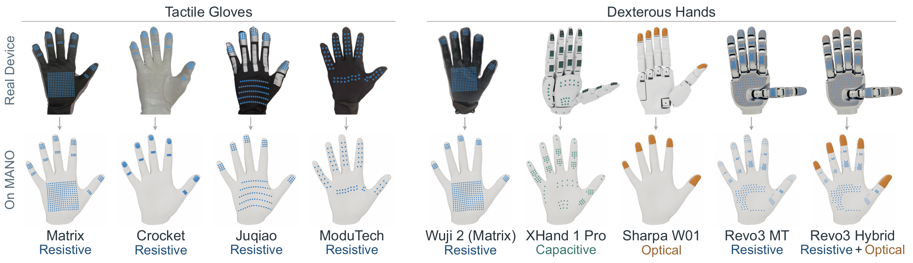
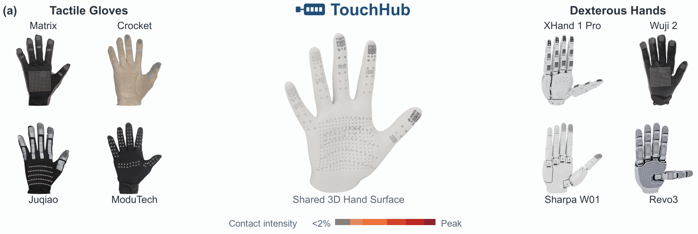
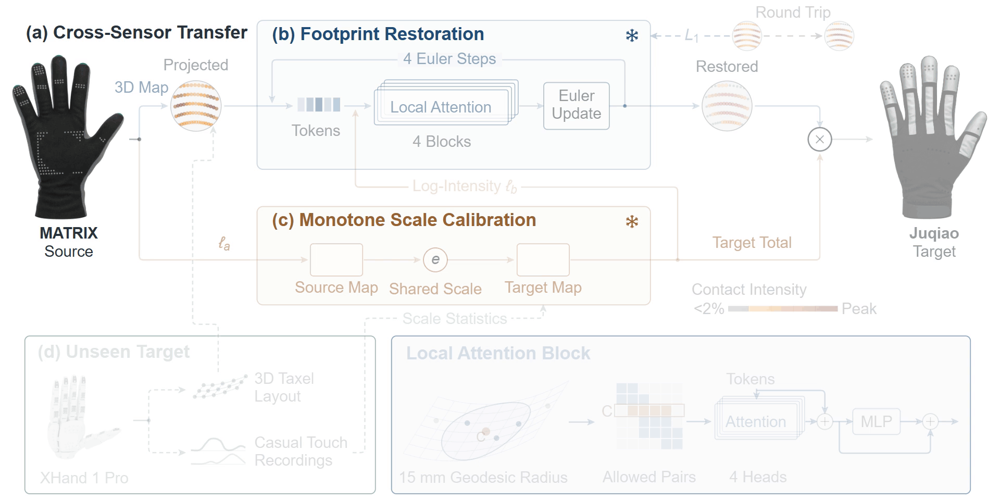

TouchHub: Tactile Retargeting from Human Gloves to Dexterous Hands without Retraining
A shared tactile interface for human gloves and dexterous robot hands
Abstract
3D kinematic retargeting transfers human hand motion across robot embodiments, yet tactile signals remain tied to the glove that recorded them. Differences in sensing principles, taxel layouts, and surface coverage make it difficult to transfer touch from gloves to robot hands. TouchHub maps human glove readings directly to a robot hand’s native tactile channels, without paired cross-sensor contacts or retraining the retargeter. It registers sensor layouts on a shared MANO surface, restores contact footprints with a self-supervised local transformer, and calibrates response scales. Given a new sensor’s 3D layout and unlabeled touch recordings, the frozen model recovers compact contacts and suppresses activation away from the contact region. The resulting human demonstrations improve closed-loop manipulation even with limited robot data.
Cross-Sensor Tactile Retargeting
Taxel layouts on a shared MANO surface
The top row shows four tactile gloves and five robot-hand configurations. The bottom row places each sensor’s taxels on the same hand surface, so their coverage and sensing technologies can be compared directly.

From glove readings to native robot taxels

Retargeting a fingertip press
A press recorded on Matrix is retargeted to Crocket. Geometric transport locates the contact but spreads its footprint. Footprint restoration concentrates that response; monotone scale calibration adjusts its intensity to the target sensor. The fourth fingertip shows the measured Crocket response for comparison.
Cross-sensor contact examples
TouchHub separates where contact occurs from how a sensor responds. Compare an input press, the measurement from the target sensor, and TouchHub’s reconstruction. The insets magnify the contact; the bars measure centroid error and off-region activation.
Compare with geometric transport, thresholding, and DFM
Surface transport, restoration, and calibration
Geometry projects the source readings onto the target layout. A local transformer restores the contact footprint from within-sensor round-trip supervision, while a monotone calibrator uses unlabeled statistics to match response scales.

Human–Robot Co-training
Can a robot policy benefit from touch recorded on a human hand? Choose a task and a robot hand to compare TouchHub, Human Touch Masked, Robot Only, Human Only, Touch Thresholding, and the FTP-1-style Zone Encoder. Each panel shows a recorded rollout; its bar gives the aggregate task success rate.
Clips show successful TouchHub trials and, where available, failures of the comparison methods. Bars report success rates across all trials in Table 3.
Co-training Results Summary
On Sharpa, bulb screwing improves from 40% to 93% relative to robot-only training. On XHand, cup separation reaches 100%, compared with 50% for robot-only and 55% with human touch masked. The charts show all six methods for each task at the full robot demonstration budget.
Cross-Sensor Fidelity and Transfer
Across 12 transfer directions, TouchHub reduces log-reading error to 0.60, about 30% below OpenTac-style (0.86). With both Matrix skins held out, false activation falls from 0.568 with geometric transport to 0.062 with TouchHub, an 89% reduction. These are separate experiments with different comparison methods.
Cross-sensor signal fidelity
Held-out skins and new devices
Table 2 compares geometric transport alone with TouchHub. Select a metric for each experiment. Held-out rig skins have accuracy and reading-error measurements; new devices instead report 3D drift. Both report false activation.
Held-out rig skins
New devices
Core mechanism ablations
Table 4 compares six variants across 12 transfer directions and three seeds. Removing either learned module increases false activation. Compare two metrics side by side, or choose 10 mm accuracy to see the localization trade-off.
False activation
Reading error
The unpaired variant trains restoration across gloves without paired contacts. The synthetic variant retains within-sensor round trips but uses synthetic intermediate MANO layouts, without recordings from another real skin.
BibTeX
Project website citation
@misc{touchhub_project,
title = {TouchHub: Tactile Retargeting from Human Gloves to Dexterous Hands without Retraining},
howpublished = {Project website},
url = {https://ziijialee.github.io/touchhub/}
}